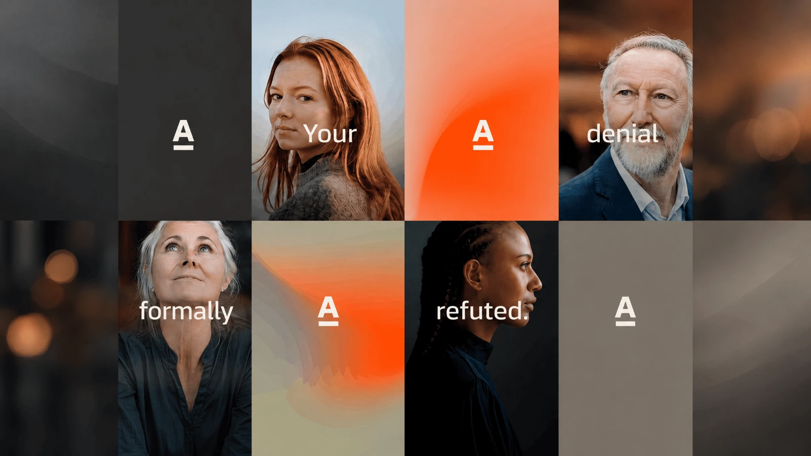

Appeal Architect
A formal argumentation engine for health-insurance appeals: every sentence in the letter is traceable to policy language or clinical evidence.

Open live app ↗The problem
Denied claims get appealed with letters written under time pressure, and the ones that win are the ones that answer the insurer's stated reason on its own terms. Free-form generation is dangerous here — an invented citation ends the appeal.
What I built
Denial reasons are parsed into claims, matched against policy clauses and evidence, then assembled through a formal argumentation framework that only emits a sentence if it is supported. Unsupported branches surface as gaps for a human to fill, rather than being papered over.